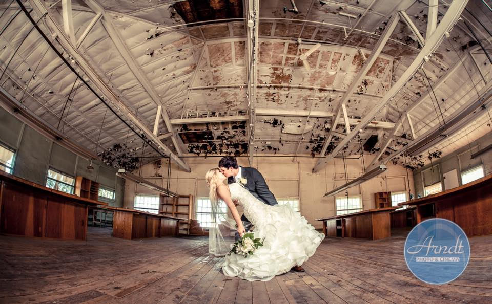
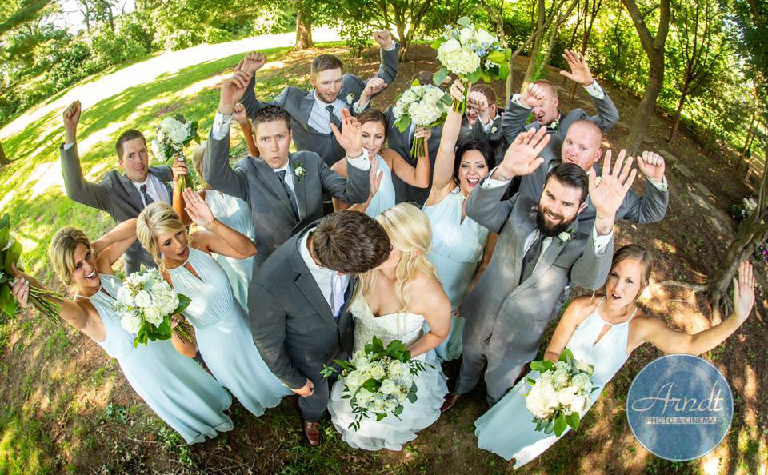
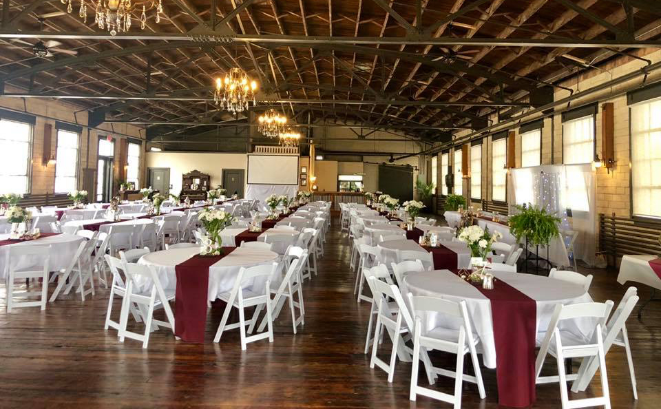
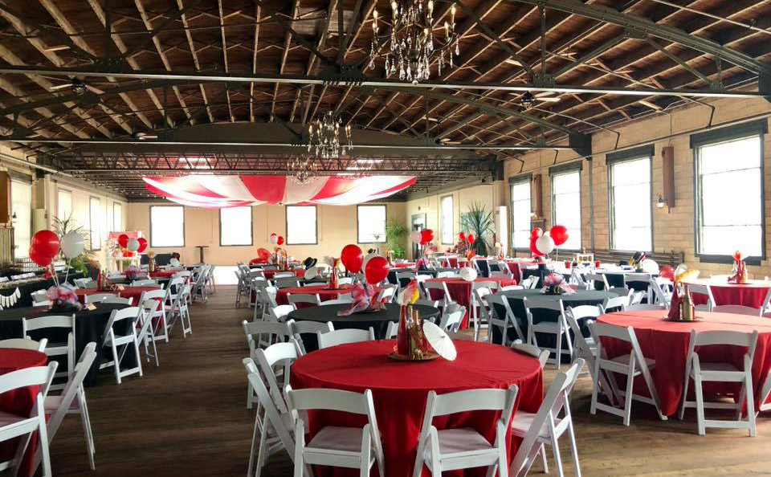
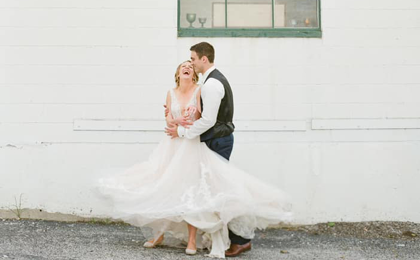
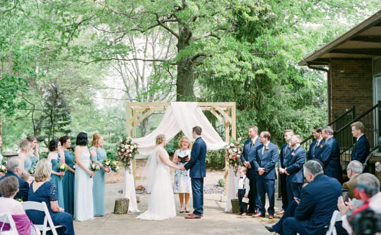
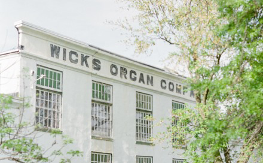
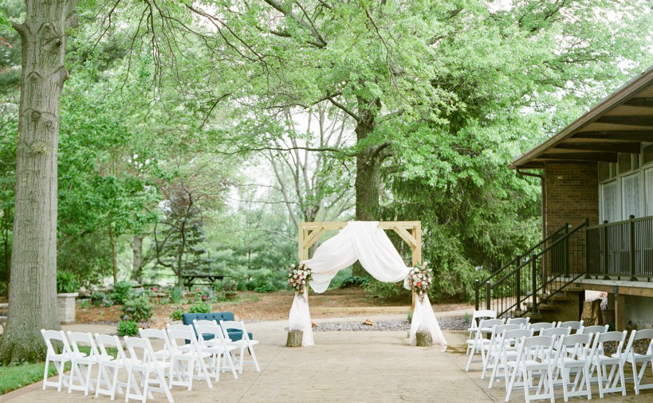

We have an array of party and wedding venue options at Olde Wicks Factory Special Event Center in Highland, IL. Whether you have a large wedding of 350 or a work conference for less than 100, we have the perfect event space to meet your needs.
The West Hall seats 300 for dinner and 350 for a ceremony. This large venue space includes banquet tables and chairs with the rental. Interesting features include exposed brick, original hardwood floors and original factory architecture!
The North Patio is a spacious outdoor venue nestled privately on our 8 acres. The patio includes an arbor to decorate in coordination with your wedding design, a gas fire pit and outdoor lighting. This venue can seat 200 for dinner and 300 for a ceremony. The rental includes banquet tables and chairs.
The Stained Glass Hall is in the space that was originally the pipe organ display room. This quaint venue is perfect for smaller events. It seats 120 for dinner, and 150 for a wedding ceremony. It features exposed brick and beautiful vintage stained glass.
At Olde Wicks Factory Special Event Center in Highland, IL, we have everything you need to make your wedding a success, including a stunning bridal suite perfect for your entire bridal party. This space features five hair and makeup stations, crystal chandeliers, a breakfast bar, and luxurious couches for relaxation. You and your friends will love the intimate setting of our bridal party space, as well as the convenience offered by getting ready on site for your big day.
In addition to everything listed above, our bridal suite also includes a stunning photo op for those must-have “getting ready” photos. Your photographer will love the lighting and space offered to snap candid shots of you and the gals getting ready and having a good time. Never lose a moment when you choose our premium bridal party space.








`